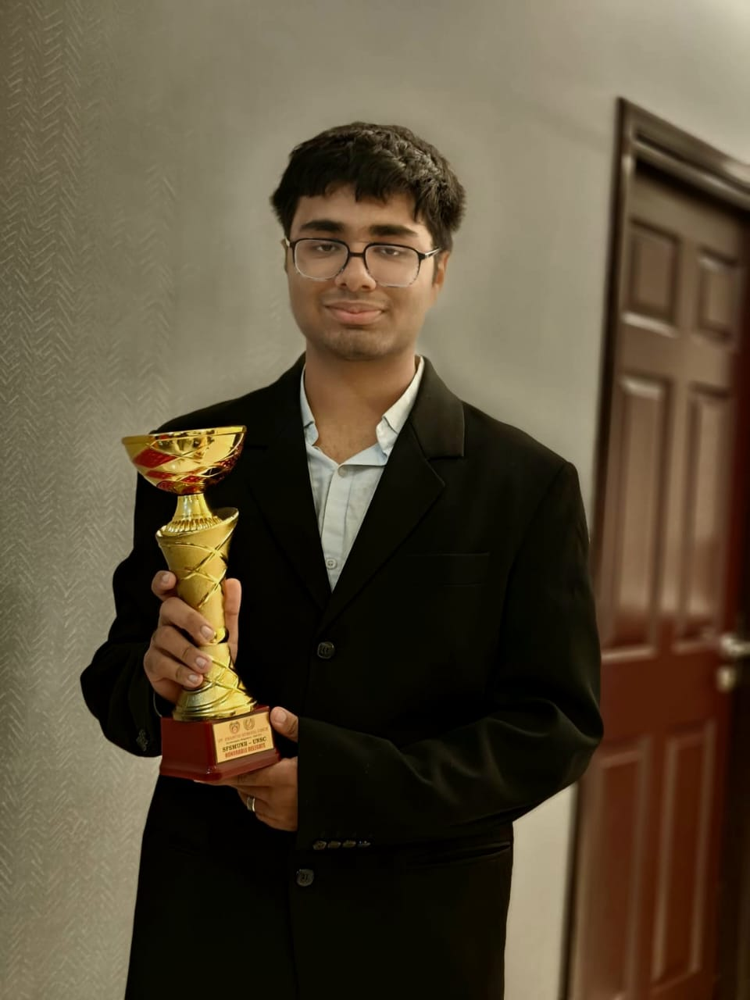

Executive Board Member
Atharva Puri

Chairperson
Atharva Puri is an ambitious and driven student preparing for the NDA, JEE, and CLAT exams, showcasing his diverse interests in defense, engineering, and law. He has participated in over 15 Model United Nations, gaining hands-on experience in diplomacy, public speaking, and strategic thinking. Beyond academics, Atharva has worked with startups and MNCs through internships, honing practical skills, leadership abilities, and real-world problem-solving. Known for his curiosity, focus, and adaptability, he thrives on challenges that push his limits and broaden his perspective, balancing academic rigor with meaningful leadership experiences.
Passionate about learning, collaboration, and impact, Atharva enjoys connecting with new people, exploring innovative ideas, and contributing to initiatives that inspire growth and positive change.
Co-Chairperson
Known for her sharp intellect and eloquent diplomacy, Sahitya brings both confidence and composure to the UNSC. Her ability to navigate intense debates with empathy and clarity makes her an inspiring figure for every delegate. Beyond her debating prowess, she is approachable, grounded, and deeply passionate about fostering meaningful discussion — a leader who ensures that every voice in the room is heard and valued.
Her dedication to Model United Nations reflects not just skill, but a true love for dialogue, collaboration, and the spirit of global governance. With her at the helm, the UNSC promises to be a space of insight, diplomacy, and intellectual rigor.
Moderator
Rando
No idea